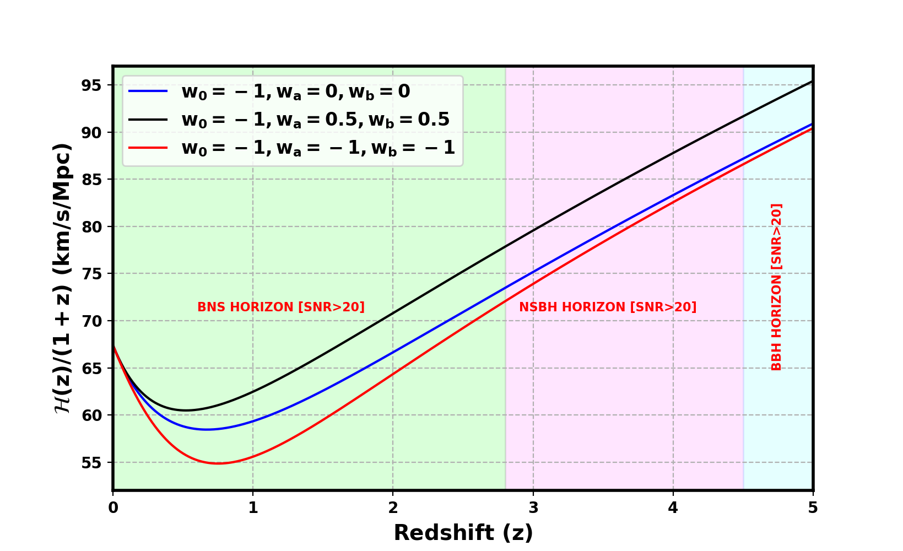
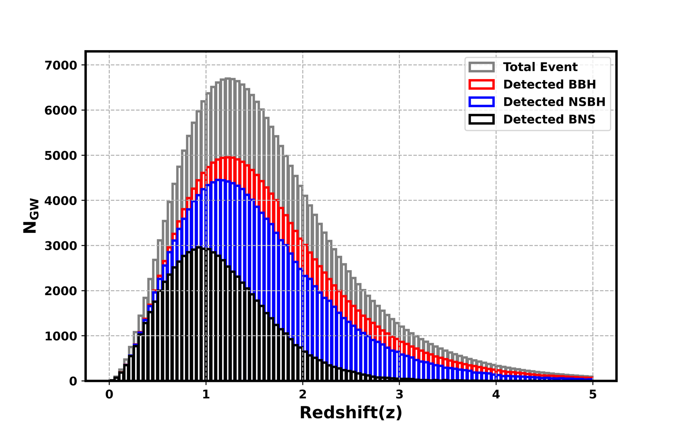
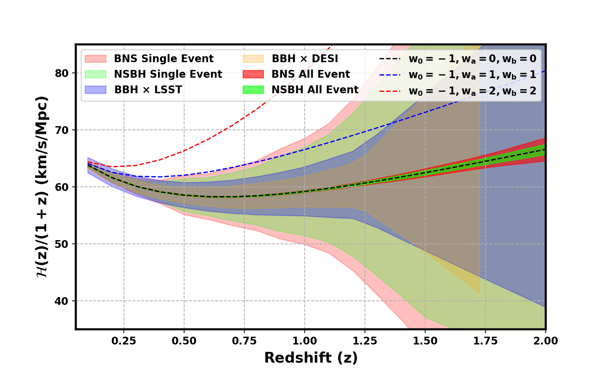
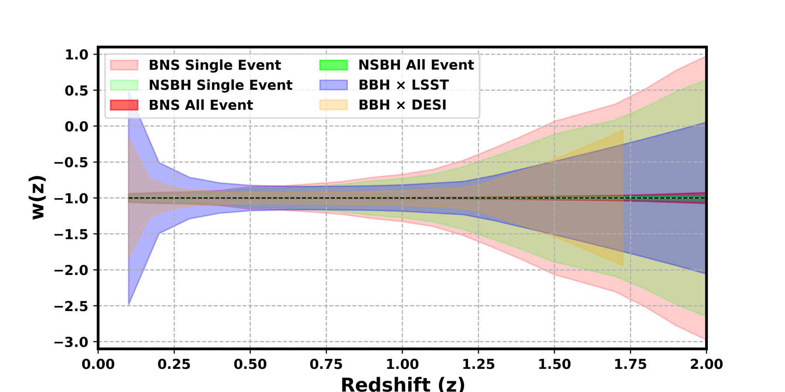
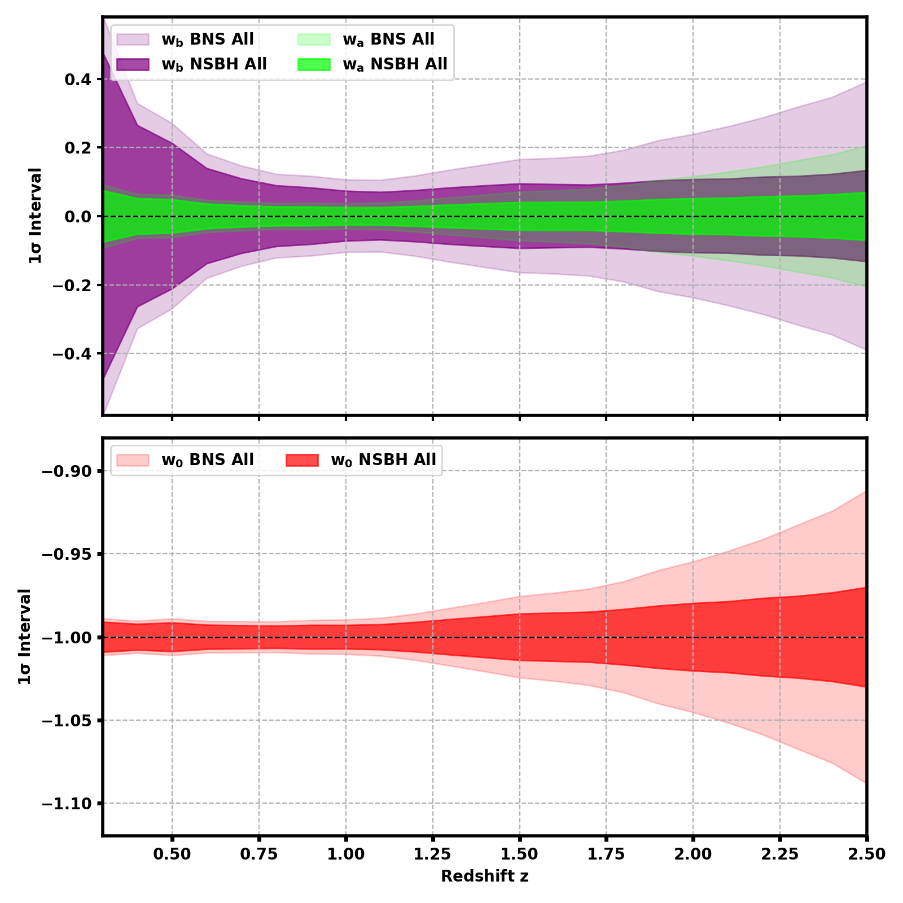
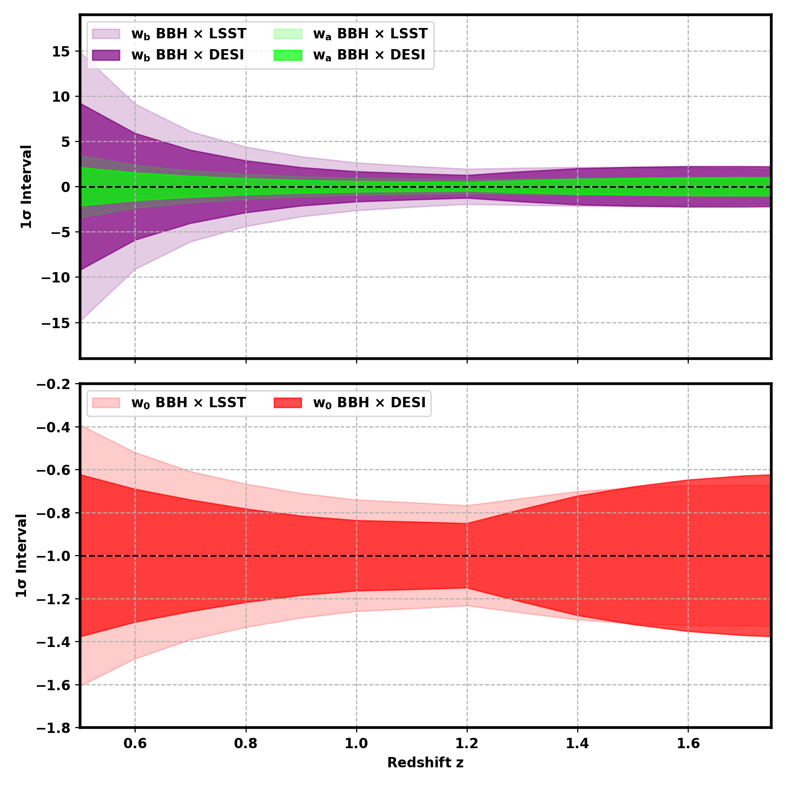
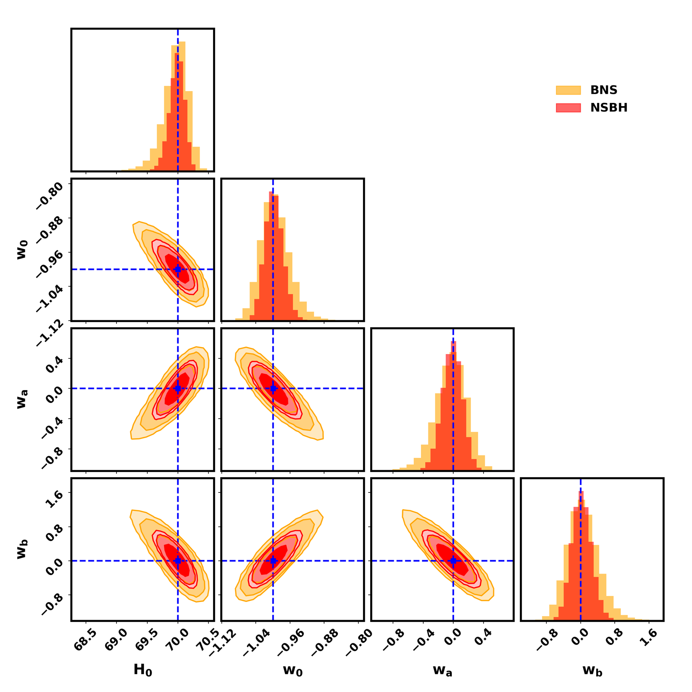
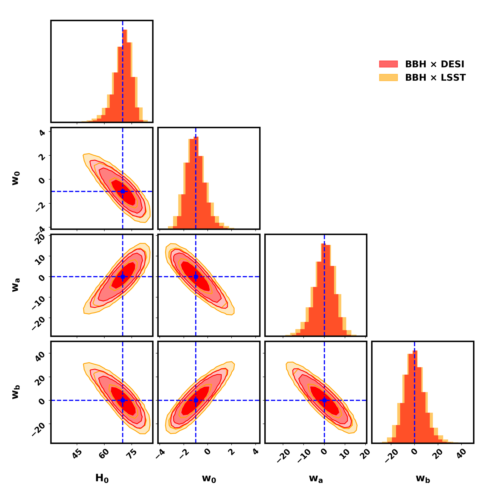
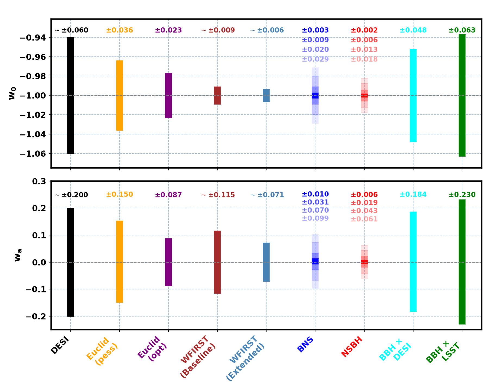
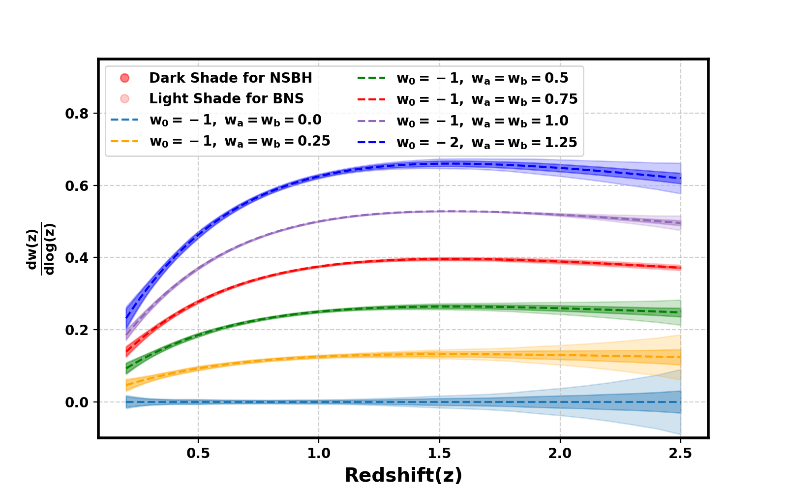

01 — The questionIs dark energy constant?
Dark energy is described by its equation of state w(z), the ratio of its pressure to its density. A cosmological constant has w = −1 at all times; anything else means dark energy evolves. The standard way to test this is the two-parameter CPL form, in which w changes linearly with the scale factor. It works well near today, but it is a strong assumption: real dark energy models, such as thawing or freezing scalar fields, can evolve in more complicated ways that CPL simply cannot represent.
Gravitational-wave sources reach far deeper than supernovae, out to redshifts where such differences become visible. So we extended CPL with one more term, wb, that allows curvature in the evolution, and also reconstructed w(z) without any formula at all:
If wb turns out consistent with zero, the simple CPL picture is confirmed; if not, dark energy has richer dynamics than current analyses assume.

02 — The methodBright sirens and dark sirens
The distance comes from the gravitational wave itself. The redshift has to come from somewhere else, and how depends on whether the merger shines.
Bright sirens
Mergers involving a neutron star (BNS and NSBH) can produce a flash of light, a kilonova or gamma-ray burst. Telescopes find the host galaxy and measure its redshift precisely, so each event gives a clean distance–redshift point.
Dark sirens
Binary black holes usually emit no light. Their redshifts are inferred statistically by cross-correlating their positions with galaxy surveys, since mergers happen in galaxies and trace the same large-scale structure.
Two kinds of galaxy survey
We compared the spectroscopic DESI survey, with precise redshifts up to z ≈ 2, and the photometric LSST survey, which reaches deeper, to z ≈ 3, but with less precise redshifts.
Realistic uncertainties
Distances come from full Bayesian parameter estimation of simulated signals, and include weak gravitational lensing, which blurs the distances of far-away sources. Only loud, "golden" events with SNR above 20 are used.
03 — The dataHundreds of thousands of sirens
We simulated five years of observation with Cosmic Explorer (40 km arms) and the Einstein Telescope operating together, with a 75% duty cycle. The sources follow mass distributions and merger rates informed by the LIGO–Virgo–KAGRA catalogues, with merger times delayed from star formation.
Even with a strict signal-to-noise threshold of 20, the network detects about 76,000 binary neutron stars, 152,000 neutron star–black hole binaries and 180,000 binary black holes, with most events near redshift 1 and a long tail beyond redshift 3. It is this enormous number of distance measurements, spread across most of cosmic history, that makes precision dark energy measurements possible.

04 — Expansion historyReconstructing the expansion, without assuming a model
First we asked what the sirens can measure without assuming any model for dark energy. We reconstructed the expansion rate H(z) and the equation of state w(z) at a set of redshift nodes, letting the data set each value freely, and compared single bright events, all bright events, and dark sirens with DESI or LSST.


05 — Beyond CPLThree numbers for dark energy, measured across redshift
Next we fitted the extended model, inferring w0, wa and wb together with the Hubble constant H0. Measured redshift slice by redshift slice, the constraints are tightest around redshift 1 for bright sirens, where the sirens are most numerous and the evolving terms matter most, and around redshift 1.2 for dark sirens, where cross-correlation redshifts are most reliable.




| 1σ uncertainty (fixed H0) | BNS | NSBH | BBH × DESI | BBH × LSST |
|---|---|---|---|---|
| Standard CPL (wb = 0) | ||||
| w0 | ± 0.003 | ± 0.002 | ± 0.05 | ± 0.06 |
| wa | ± 0.010 | ± 0.006 | ± 0.18 | ± 0.23 |
| Extended model (wb free) | ||||
| w0 | ± 0.010 | ± 0.006 | ± 0.19 | ± 0.24 |
| wa | ± 0.080 | ± 0.049 | ± 1.5 | ± 1.9 |
| wb | ± 0.117 | ± 0.072 | ± 2.2 | ± 2.7 |
Forecast 1σ uncertainties from all detected events in five years of Cosmic Explorer + Einstein Telescope observation, with H0 fixed to 67.4 km s−1 Mpc−1, around a cosmological constant. Bright sirens assume every neutron star merger has an observed counterpart.
06 — How it comparesAn order of magnitude beyond other probes
Putting the CPL constraints next to the forecasts for Euclid, DESI and the Roman Space Telescope (WFIRST) shows the headline result: bright standard sirens can measure dark energy with uncertainties up to an order of magnitude smaller than these surveys. Even with the extra freedom of wb, neutron star–black hole sirens alone pin down w0 to about 0.006, wa to about 0.05 and wb to about 0.07.
The key ingredient is the light. Not every neutron star merger will be seen by telescopes, so we repeated the analysis with 1%, 10%, 50% and 100% of mergers having a detected counterpart. The constraints tighten steadily as the fraction grows, and even modest follow-up programmes deliver competitive measurements: the precision of this multi-messenger approach is set as much by electromagnetic follow-up as by the gravitational-wave detectors.
Dark sirens are less precise, but they need no counterpart at all and remain complementary to galaxy surveys, with DESI performing better at low redshift and LSST taking over at higher redshift.

Precision on the parameters translates into the ability to tell dark energy models apart. A useful diagnostic is how fast the equation of state changes with redshift, dw/d log z. For a cosmological constant it is zero; for evolving models it rises and peaks at a redshift that depends on the model. With bright sirens, the predictions for different models are cleanly separated, with the smallest uncertainties around redshift 1, exactly where the sirens are most numerous.

07 — Why it mattersA new route to dark energy
Standard sirens measure distances from first principles, without the calibration chain that supernova cosmology relies on, so their constraints are both precise and robust against the systematics that worry other probes. With next-generation detectors they will reach far enough, and in large enough numbers, to test dark energy beyond the CPL parametrization: quintessence, phantom models and modifications of gravity can all be confronted with the data.
Realizing this needs more than gravitational-wave detectors. Coordinated electromagnetic follow-up to find counterparts, and deep, wide spectroscopic galaxy surveys for dark sirens, are equally important. The same approach also extends to space-based detectors such as LISA. Multi-messenger cosmology, combining gravitational waves with light, is set to become one of the sharpest tools we have for understanding what drives the accelerating Universe.